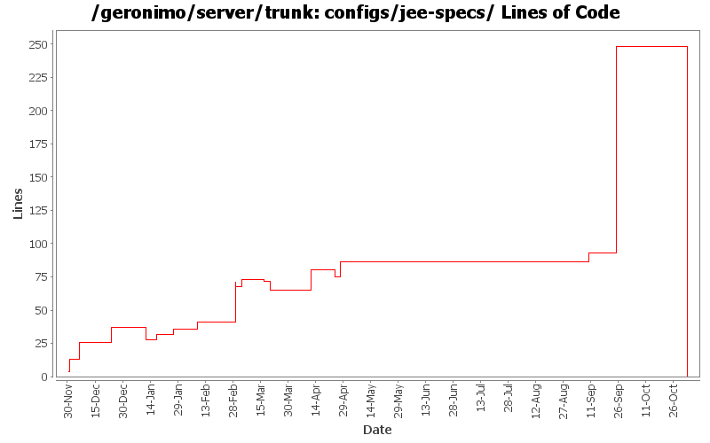

[root]/configs/jee-specs
 src
(0 files, 0 lines)
src
(0 files, 0 lines)
 main
(0 files, 0 lines)
main
(0 files, 0 lines)
 plan
(0 files, 0 lines)
plan
(0 files, 0 lines)

| Author | Changes | Lines of Code | Lines per Change |
|---|---|---|---|
| Totals | 34 (100.0%) | 378 (100.0%) | 11.1 |
| djencks | 12 (35.3%) | 297 (78.6%) | 24.7 |
| jdillon | 4 (11.8%) | 24 (6.3%) | 6.0 |
| pmcmahan | 1 (2.9%) | 15 (4.0%) | 15.0 |
| dims | 2 (5.9%) | 15 (4.0%) | 7.5 |
| gawor | 2 (5.9%) | 10 (2.6%) | 5.0 |
| dain | 2 (5.9%) | 6 (1.6%) | 3.0 |
| hogstrom | 2 (5.9%) | 5 (1.3%) | 2.5 |
| ccardona | 2 (5.9%) | 4 (1.1%) | 2.0 |
| rickmcguire | 1 (2.9%) | 1 (0.3%) | 1.0 |
| akulshreshtha | 1 (2.9%) | 1 (0.3%) | 1.0 |
| prasad | 4 (11.8%) | 0 (0.0%) | 0.0 |
| jbohn | 1 (2.9%) | 0 (0.0%) | 0.0 |
GERONIMO-3565. Configs distributed amongst framework/configs and plugins
0 lines of code changed in 2 files:
GERONIMO-3485 The code in the geronimo-acivation server module should be moved into the javamail provider package
Remove the geronimo-activation module from server and switch the javamail dependency to the 1.3-SNAPSHOT version containing the activation handlers.
1 lines of code changed in 1 file:
plan cleanup
181 lines of code changed in 1 file:
update some more configs to build more reasonable geronimo-plugin.xml metadata
7 lines of code changed in 1 file:
* updated copyright date to 2007
0 lines of code changed in 2 files:
Changed trunk to 2.1-SNAPSHOT
1 lines of code changed in 1 file:
switch to axis2 jaxws-api
6 lines of code changed in 1 file:
GERONIMO-3051 introduce some jdbc driver wrappers that allow us to sidestep the classloading restrictions of DriverManager
11 lines of code changed in 1 file:
GERONIMO-3051 Fix DB Viewer portlet error - patch from Frank G with a tweak to the jasper builder so things will build
0 lines of code changed in 1 file:
GERONIMO-3090 only one module built with boostrap
12 lines of code changed in 1 file:
GERONIMO-3090 build specs module using bootstrap, fix xmlbeans dependency
19 lines of code changed in 1 file:
basic saaj 1.3 integration
4 lines of code changed in 1 file:
Normalize all configs/*/pom.xml headers
14 lines of code changed in 1 file:
Updating from stax-api to geronimo-stax-api_1.0_spec to correct incorrect method signatures
4 lines of code changed in 1 file:
move more specs into spec module
5 lines of code changed in 1 file:
GERONIMO-2917 use the mail uber jar
4 lines of code changed in 1 file:
GERONIMO-2917 move more specs into jee-specs
34 lines of code changed in 1 file:
Fix for GERONIMO-2807 - CXF: initial service-ref support
11 lines of code changed in 1 file:
Fix for GERONIMO-2781 - Improved CXF-based POJO WebService support
4 lines of code changed in 1 file:
Switch all of Geronimo to use the EJB 3.0 specification apis.
Add application server instance to openejbsystem service.
Add dependency on openjpa to openejb module.
1 lines of code changed in 1 file:
Initial openejb3 integration
5 lines of code changed in 1 file:
Use ${version} instead of ${pom.version} or ${geronimoVersion} for deps
Fixed some deps to use the DM config for their version, created missing DM for el spec
Drop duplicate annotation in DM
Using geronimo-jta_1.1_spec everywhere geronimo-jta_1.0.1B_spec was used before
Few comments on future version fixes that need to be made
Dropped some obvious copy-paste of pom scm and build elements which are uneeded
1 lines of code changed in 1 file:
(GERONIMO-2725) Remove geronimo-qname_1.1_spec dependencies, qname is in javase 5 which is required to run 2.0
0 lines of code changed in 1 file:
GERONIMO-2671 support for stax and jaxb, with integration tests
11 lines of code changed in 1 file:
GERONIMO-2498 : Geronimo should use the full javamail uber jar instead of just the spec jar + provider jar.
- Replaced geronimo-javamail_1.4_spec with geronimo-javamail_1.4_mail
2 lines of code changed in 1 file:
GERONIMO-2635 : Need to upgrade to JavaMail 1.4 (JSR 919) and JavaBeans Activation Framework 1.1 (JSR 925) for JEE 5 compliance.
Changes:
- Updated <artifactId> and <version>
2 lines of code changed in 1 file:
GERONIMO-2628 - upgrade to tomcat 6.0.2 beta
changes:
* modules/geronimo-tomcat
** add repository http://people.apache.org/~pmcmahan/maven2/ to pom
*** this will be removed when tomcat publishes v6 artifacts
** update pom to use tomcat 6.0.2 beta jars
** remove outdated clustering (o.a.g.tomcat.cluster)
** update resources in src/main/resources/META-INF/geronimo-tomcat/var/catalina
** update dependencies in src/main/resources/META-INF/geronimo-dependency.xml
** update test cases
** disabled a test case that fails intermittently
* modules/geronimo-tomcat-builder
** remove outdated references to clustering support
** update test cases
* configs/tomcat
** add repository http://people.apache.org/~pmcmahan/maven2/ to pom
*** this will be removed when tomcat publishes v6 artifacts
* configs/webconsole-tomcat
** remove dependencies on jasper-runtime from pom.xml and plan.xml
* configs/jee5-specs
** use servlet 2.5, jsp 2.1, el 1.0, annotation 1.0
* configs/tomcat-deployer
** update pom.xml to use new web25-builder
* assemblies/geronimo-tomcat-j2ee
** rename to geronimo-tomcat-jee
* test cases
** add new unit test for servlet 2.5 to geronimo-tomcat
* remove unnecessary reference to jasper-runtime from poms using jspc-maven-plugin
** console
** demo
** ca-helper
** jsp-examples
** ldap-demo
** remote-deploy
** uddi-server
** welcome
** magic GBall
15 lines of code changed in 1 file:
GERONIMO-2629 Upgrade to J2EE Management 1.1
1 lines of code changed in 1 file:
GERONIMO-2608 switch to jacc 1.1.
13 lines of code changed in 1 file:
Need to depend on the gbean deployer
update name to match module dir
9 lines of code changed in 1 file:
GERONIMO-2604 give the specs pom a version-free name (jee-specs)
0 lines of code changed in 2 files: